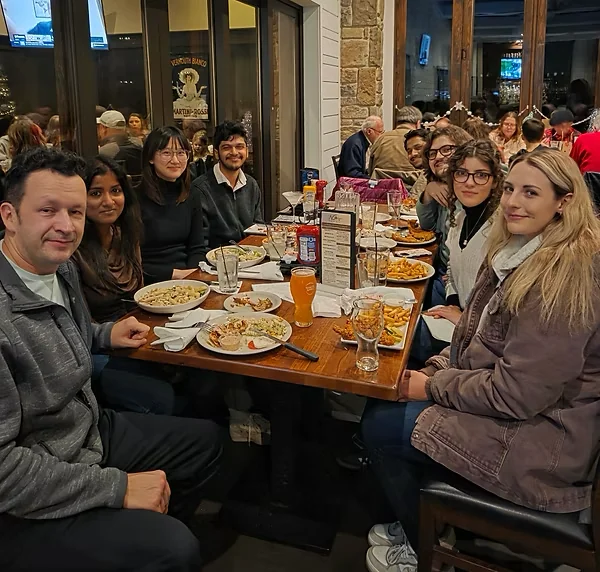
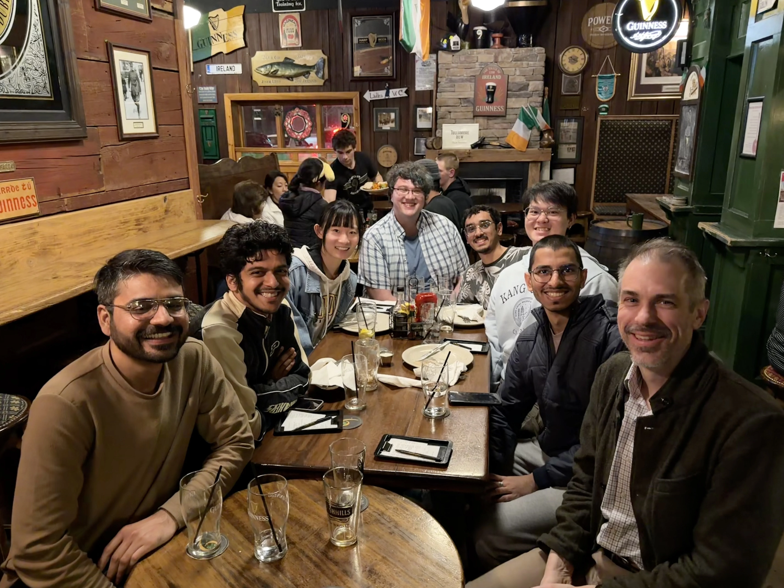
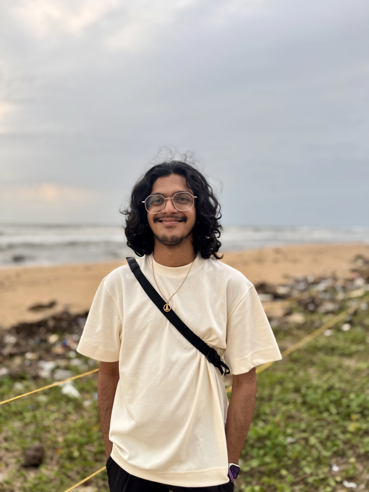
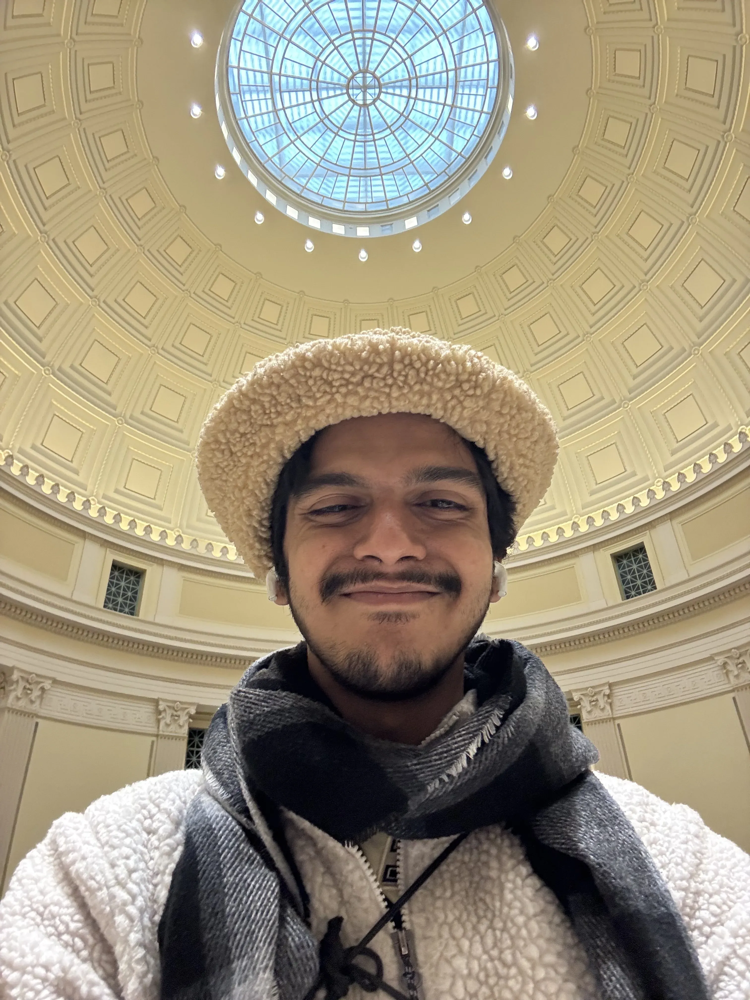
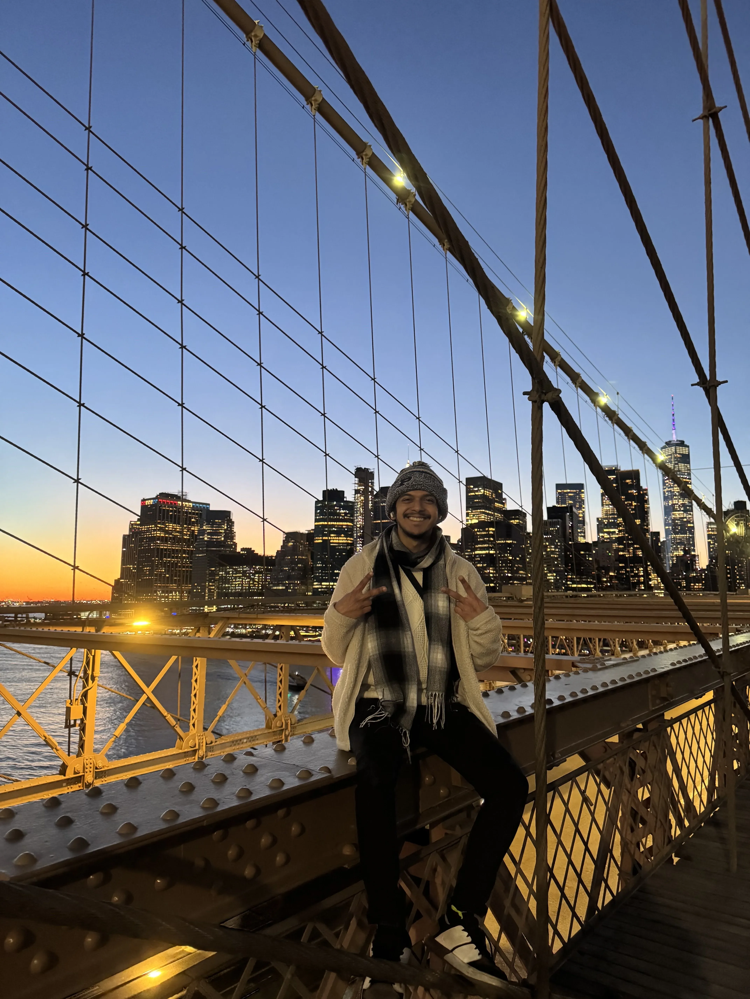
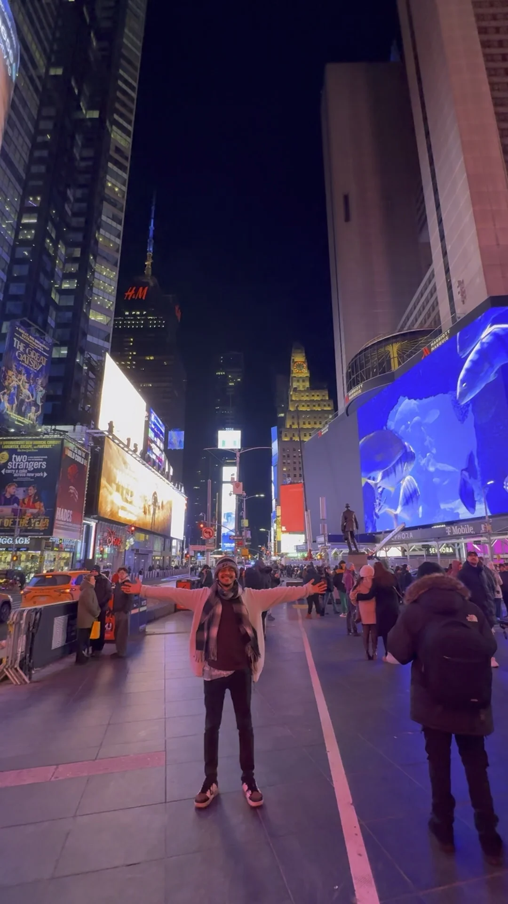

A researcher and explorer; more like a curiosity rover.
ML × neuroscience · Purdue ECE '24 · NITK ECE '21
I write software that turns neural data into something reviewer 2 will argue with.
Professional
In December 2024, I graduated from Purdue University with a Master of Science in Electrical and Computer Engineering. My primary interest is applying machine learning to prevalent problems in neuroscience. For my master's thesis I collaborated with Dr. Alexander Chubykin and Dr. Joseph Makin on probing the mechanism of memory encoding via theta oscillations in the mouse visual cortex. I built a deep-learning model based on predictive-coding dynamics to simulate a wet-lab experiment, and used neural data from Neuropixels probes to perform stimulus and genotype classification in wild-type and Fragile X mice. I also built an end-to-end pipeline to streamline analysis of mice neural data recorded in the laboratory.
I received my Bachelor of Technology from National Institute of Technology Karnataka (NITK), India in Electronics and Communication Engineering in May 2021. During my bachelors I worked on deep learning for medical image segmentation - bladder cancer and cardiac chamber. My bachelor thesis, with Dr. Hardik Pandya at the BEES Lab, IISc, was on detecting and classifying epileptic subtypes from EEG, which produced a journal publication in Biomedical Signal Processing and Control (2023) and an Indian patent granted in January 2025.


Personal
I am a naturally curious learner and always eager to explore how things (including people) work -- whether artificial intelligence, neuroscience, the human cortex, the mechanics of everyday life, religion, politics, or the millions of brilliant minds that exist (or once did).
My hobbies are scattered. I love learning new languages -- I already know four and am slowly but surely learning a fifth. Salut, ça va bien ? I can play two minutes of two songs on the piano, made a mark with my guitar (scar marks, i.e.), love cycling, and enjoy traveling to new places. To be honest, I'm not very good at sports, but I am a good sport ;) -- honestly, a very competitive one too. I play badminton and basketball and know the rules of chess just enough to defeat a "few" players.
I care deeply about this planet (and the people on it) and am always looking for ways to reduce and recycle waste. We've got to take care of the only planet we have -- for now -- right? Apparently, I also collect a lot of hats!?
I value privacy and integrity, and strongly believe in the people and companies working to build a better internet and a better world. I've learned a lot through my experiences and the people around me and a day in my life is never the same as the one before, which keeps it interesting. Above all, I firmly believe in uplifting everyone.



